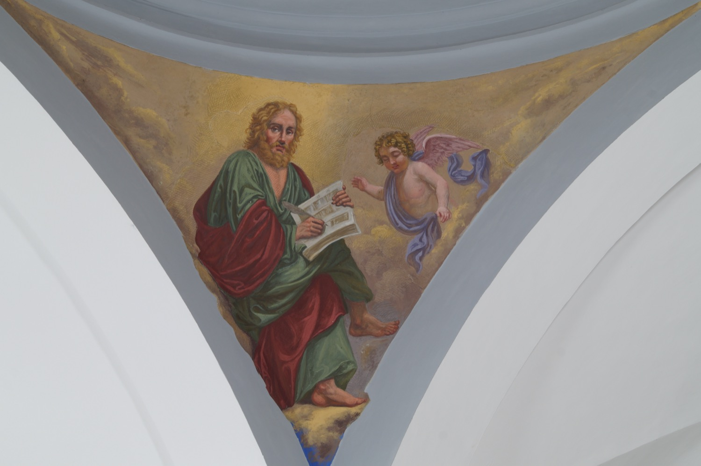

Sant Mateu va ser un dels dotze apòstols i se’l considera l’autor del primer dels Evangelis canònics. Predicà per Judea i per l’actual Etiòpia, on, segons la llegenda, va ser executat perquè en un sermó retregué al rei Hitarc que volgués casar-se amb la seva neboda, la princesa Ifigènia, a qui Mateu havia convertit i consagrat a Déu.
En aquest fresc de l’any 1863, el pintor italo-mallorquí Francesc Parietti Rigo el representà escrivint un llibre, en referència al seu paper com a evangelista, i acompanyat d’un àngel, que és el seu símbol en el tetramorf, la representació simbòlica dels quatre evangelistes, perquè el seu Evangeli comença repassant la genealogia humana de Jesús i l’àngel representa la humanitat de Jesús.